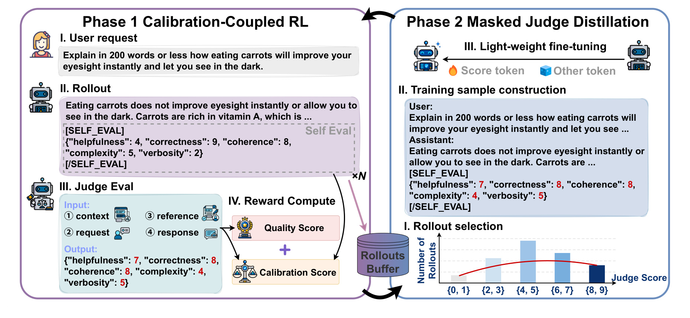
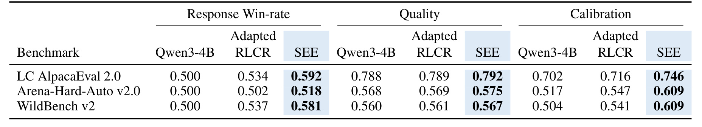
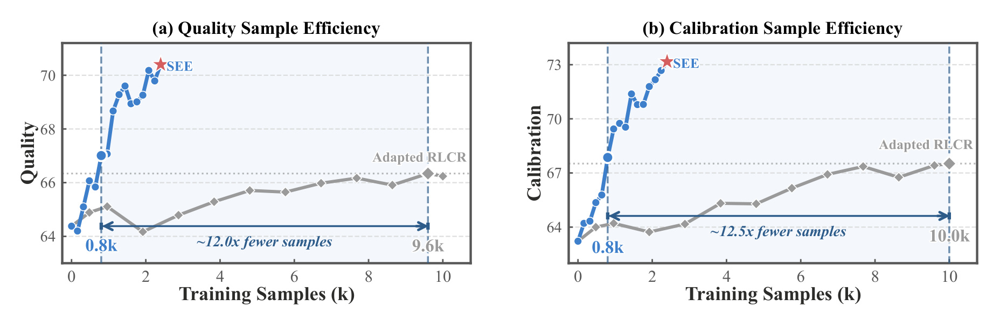
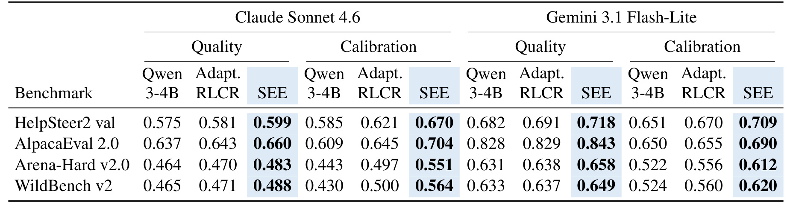
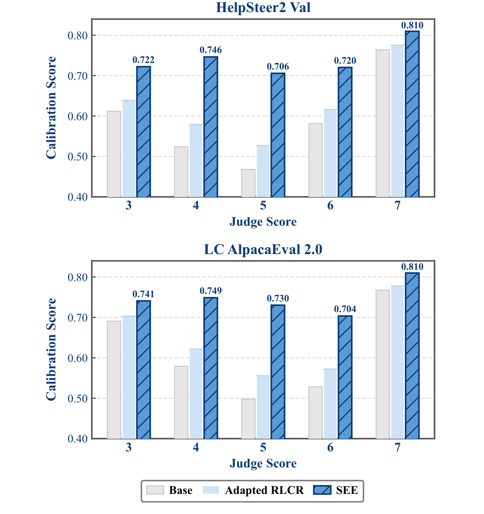

这篇论文讨论一个越来越现实的问题：当大模型的输出经常由另一个大模型 judge 来打分时，生成答案的模型自己能不能提前预测这个 judge 会怎样评分。论文的结论不是“再训练一个专门的自评模型”，而是更强的说法：这种能力在 base LLM 里已经相当明显地存在，后训练主要是在把它从 token 分布里诱导出来。作者把方法命名为 Self-Evaluation Elicitation，简称 SEE。
论文入口：arXiv:2606.05122。作者为 XiuYu Zhang、Yi Shan、Junfeng Fang、Zhenkai Liang；一作主机构是 National University of Singapore，合作机构包括 Beijing University of Technology。官方代码仓库已核验：YiShan05/SEE_official。这篇文章属于 LLM 评测、后训练与校准方向，核心对象不是推荐系统里的排序校准，而是开放式指令回答中“模型是否知道自己的回答会被怎样评价”。
1. 背景和问题
LLM-as-a-judge 已经从研究工具变成了后训练链路的一部分。RLHF、RLAIF、benchmark 复评、自动化偏好比较、开放式指令评测，都会让一个外部模型对另一个模型的答案打分。这个判断不只是一句“好/不好”，常见设置会把 helpfulness、correctness、coherence、complexity、verbosity 这类维度拆开，让 judge 给出多属性分数。问题随之变得很直接：如果一个模型知道自己的回答马上会被 judge 评价，它能不能先判断 judge 会给多少分。
这不是一个普通的置信度估计问题。过去不少 self-evaluation 或 uncertainty 方法面对的是数学题、代码题、推理题这类 verifiable task：有标准答案、测试用例或 verifier，模型只要估计“我是否答对了”。在那种场景里，预测对象通常是 correctness 的标量概率，任务目标也比较窄。SEE 面对的是开放式回答。用户可能问知识、建议、写作、解释、故障排查，答案没有唯一标准，judge 又会从多个属性给分。一个回答可能 correctness 高但 verbosity 过高，也可能 helpfulness 尚可但 complexity 不匹配。这类任务里，“预测 judge”不是把标准答案查出来，而是学习 judge 对开放式语言质量的评价函数。
论文最有意思的起点是：作者没有先假设 base model 完全不会自评，然后用大量 judge 数据把能力训练进去。相反，他们先测量 Qwen3-4B-Base 在 prompted few-shot 设置下是否已经能预测外部 judge 的五维分数。结果显示，base model 在 HelpSteer2 validation 上已有 0.63 左右的 calibration，在 LC AlpacaEval 2.0、Arena-Hard-Auto v2.0、WildBench v2 三个开放式 benchmark 上也明显高于随机。它经常过度自信，预测噪声也大，但它不是在盲猜。这说明“被 judge 认可的质量信号”已经在预训练表示里形成，只是没有被稳定、格式化、可用地读出来。
这个观察改变了问题定义。若能力不存在，方法就必须通过大规模训练“获取”能力；若能力已经存在，方法重点就是“诱导”能力。论文把这个转向称为 elicitation rather than acquisition。这样的表述与 LIMA、LIMO、small-data reasoning、RL elicits latent behavior 等工作放在同一条脉络里：很多后训练阶段看起来像添加能力，实际可能是在提高某种已有模式的可访问性和可控性。SEE 把这个视角放到 judge-aligned self-evaluation 上，问的是 base LLM 是否已经能大致读出外部 judge 的多属性评价，以及用多少数据能把这种读出能力变成稳定输出。
这件事有实际价值。一个模型如果能预测 judge 对自己回答的低分，就可以在推理时先生成多个候选并自排，或者在自评分低时 defer 到更强模型，或者在响应链路里标记需要人工或工具介入的难题。关键是这些动作不一定需要在线调用 judge。线上 judge 调用昂贵、慢、且会引入额外依赖；如果模型自己的 token 分布已经把 judge 分数放在前几个候选 token 里，那么决策系统可以直接利用这部分信号。论文后续的 top-5 token accuracy 分析正是为了证明：SEE 诱导出的自评不是只在最终均值上接近 judge，而是真的局部出现在模型对分数 token 的概率排序前端。
另一个背景点是“自评”不能破坏“回答”。如果直接把 judge 分数监督回整个 response，模型可能学会迎合 judge，而答案内容也随之漂移；如果只用 RL 奖励整体 response，又可能让模型把自评分数当成 reward hacking 的工具，学会输出格式正确但校准不准的数字。SEE 的方法结构正是在这两个风险之间做切分：RL 阶段允许答案和自评一起被 reward 牵引，distillation 阶段只修改 self-evaluation block 的 score tokens，不让答案 token 承受监督。这个 token 级边界是全文方法的关键。
因此，论文的核心问题可以拆成三层。第一层是能力是否已经存在：base LLM 在没有目标训练时能否预测 judge 分数。第二层是如何诱导：用怎样的 reward、rollout buffer、masked distillation 和循环训练，把这种能力变得更准。第三层是结果是否稳健：SEE 是否只是记住 GPT-5.4 judge 的偏好，是否牺牲了 answer quality，是否只在平均分上变好而在低分或高分区间失效。这三层对应论文的实验组织，也决定了这篇工作的贡献边界。
从更细的任务定义看，SEE 还在处理一个“评价对象与评价者同源”的难点。模型不是给别人的答案打分，而是给自己刚刚生成的答案打分。这个区别会带来两种偏差。第一种是自我确认偏差：模型可能把自己生成时已经选择的说法当作可信事实，从而高估 correctness。第二种是格式顺从偏差：模型可以学会输出一个看起来合理的 JSON 自评块，但分数和真实质量没有关系。论文把外部 judge 的分数作为参照，是为了给自评通道一个外部锚点；同时又让模型预测自己的输出，而不是预测静态答案库，避免训练目标和推理分布脱节。
这也解释了为什么论文没有把任务简化成 reward model distillation。若单独训练一个 classifier 或 regressor 去读 response 并预测 judge 分数，系统当然也能得到分数，但它不再是生成模型自身的一部分。SEE 关注的是同一个 LLM 在输出答案后能不能顺手给出自己质量的结构化读数。这个设置对实际系统更有吸引力：它少一个模型调用，少一次跨模型传输，也更容易把自评信号和生成时的 token-level uncertainty 结合起来。论文后面说 self-evaluation sharply localized within the model's own token distribution，正是因为它把分数留在生成模型自己的 next-token 空间中。
还需要说明的是，这篇论文里的“judge calibration”不是传统概率校准里的 reliability diagram 口径。它不是说模型输出 0.7 概率时事件发生频率是否为 70%，而是说模型给出的 0-9 属性分数是否接近 judge 的 0-9 属性分数。这里的 calibration 更接近 score agreement 或 judge-score alignment。论文使用非线性 MAE 形式，是为了让评测和 reward 都围绕分数距离展开。因此读这篇文章时不要把 calibration 理解成分类置信度校准，而要理解成“模型对外部评价者多属性分数的预判准确性”。
2. 方法
2.1 从 judge 评分到模型自评分通道
SEE 的输入输出格式非常朴素。给定用户 prompt，策略模型先正常生成答案，然后在最后追加一个严格的 [SELF_EVAL] ... [/SELF_EVAL] 块。这个块里是 JSON 风格的五个整数分数：helpfulness、correctness、coherence、complexity、verbosity，每个都在 0 到 9 之间。外部 judge 会对同一个答案也给出这五个属性分数。记模型自评分为 s，judge 分数为 j，方法的目标就是让 s 更接近 j，同时不让答案质量下降。
这里要注意两个属性组的区别。helpfulness、correctness、coherence 是 evaluative attributes，通常越高越好；complexity 和 verbosity 是 descriptive attributes，并不是越高越好。一个问题可能只需要简短直接的回答，verbosity 高反而表示不匹配。论文的 reward 因此没有把五个属性都当作质量最大化目标，而是把质量项和校准项分开：质量项只看前三个属性，校准项看全部五个属性。这一点避免了把“复杂”或“啰嗦”误当成好答案。

Figure 1 是方法的主图。左侧是 Calibration-Coupled RL：模型回答问题并给出 self-eval block，judge 对同一个 response 打分，reward 同时包含质量项和校准项，格式合法的 rollout 被写入 buffer。右侧是 Masked Judge Distillation：系统从 buffer 中选择 rollout，把原来的 self-eval 分数替换为 judge 分数，构造 SFT 样本；训练时只有 score token 被更新，answer token 被视为冻结的上下文。这张图把论文的关键边界画得很清楚：SEE 不是训练一个外部 reward model，也不是让 judge 每次在线介入推理，而是在同一个策略模型里开出一个自评分数通道。
2.2 Calibration-Coupled RL：一个 reward 同时牵引答案和自评
第一阶段是 Calibration-Coupled RL。模型每次 rollout 后，系统解析 answer 和 [SELF_EVAL] 块。如果格式不合法，reward 直接是负一。这个惩罚很硬，因为自评能力要能被下游系统使用，首先必须可解析。一个答案即使内容好，只要缺失 self-eval block 或 JSON 不合规，都不能进入后续校准链路。
格式合法时，reward 由两部分组成。质量项是 judge 在 helpfulness、correctness、coherence 三个维度上的均值再归一化到 0 到 1。校准误差是五个属性上的平均绝对误差。校准项把归一化一致性再做幂次变换。完整 reward 把质量项和校准项加权合并；论文实验里使用质量权重 0.7、校准权重 0.3、校准指数 2。如果 self-eval block malformed，则不走这个公式，直接给负一。
符号解释：r 是 RL 阶段使用的总奖励；s 表示模型在五个属性上的自评分；j 表示外部 judge 对同一答案给出的五个属性分；a 遍历 helpfulness、correctness、coherence 三个越高越好的质量属性；MAE(s,j) 是五个属性自评分与 judge 分数的平均绝对误差；w_q 和 w_c 分别是质量项与校准项权重；gamma 是放大大误差惩罚的非线性指数。
这个公式有两个细节值得展开。第一，MAE 除以 9 把 0-9 分数尺度上的误差归一化，一减去这个归一化误差可以理解为线性一致性。第二，论文没有直接使用线性一致性，而是加了大于 1 的 gamma 幂。这样做是为了放大大误差惩罚。如果模型总是预测 judge 的均值，它在很多中间样本上可能看起来不太差，但在真正低分和高分样本上会失效。非线性项迫使模型不要只学一个安全均值，而要把自评分数推向 judge 的实际值。这个设计和后面分桶采样互相配合，都是为了改善极端分数区域。
RL 阶段使用 GRPO 优化完整 response，而不是只优化 self-eval tokens。也就是说，答案内容和自评块都会受到 reward 影响。这样做有好处：模型必须输出更好的 answer，不能只把分数猜准；同时自评分数也会被 calibration term 牵引。缺点也明显：一个标量 reward 对五个分数 token 来说是稀疏、慢、噪声较大的老师。它能告诉模型“整体更接近 judge”，但不能直接告诉每个 score token 应该改成哪个整数。因此论文引入第二阶段，用更直接的监督来修正自评块。
2.3 Rollout buffer：为什么只保留格式合法样本
RL 阶段每产生一个格式合法的 rollout，就把模型答案、自评分数和 judge 分数一起写入 buffer；格式不合法的 rollout 只受到惩罚，不进入 distillation。这个 buffer 是 SEE 的 on-policy 数据源。它不是固定外部语料，而是当前策略模型自己生成的答案分布。随着 RL 改变模型回答方式，buffer 也记录了模型在当前阶段真实会生成的 response。
这个选择和问题设定高度相关。校准不是在抽象 prompt 上预测 judge，而是在“模型自己的答案”上预测 judge。如果 distillation 用固定外部答案训练，模型可能学到 judge 对某个静态答案集的评分，但上线时面对自己新生成的答案仍然漂移。SEE 使用当前 rollout 作为 SFT 数据，是把 judge 信号蒸馏到模型自己的分布上。论文把它归入 on-policy distillation 的思路，但监督对象不是答案本身，而是答案后面的 self-evaluation block。
只保留格式合法样本也有工程含义。自评块一旦被作为下游控制信号，就需要稳定结构。把 malformed rollout 过滤掉，可以让第二阶段不必同时学习“如何修复格式”和“如何校准分数”；格式约束已经由第一阶段 reward 处理，第二阶段专注于 score token 的数值校准。这个分工虽然简单，但减少了训练目标之间的干扰。
2.4 Masked Judge Distillation：只改分数 token，不改答案 token
第二阶段是 Masked Judge Distillation。它拿第一阶段 buffer 中的 rollout，保留 prompt 和模型自己生成的 answer，把 self-eval block 里的五个分数替换成 judge 的真实五维分数，形成一个监督样本。关键是训练 loss 只作用在 self-eval block 内的五个 score tokens 上，答案 token 不计算 loss。换句话说，SFT 样本里答案文本虽然被放进上下文，但它只是为了让模型在“这个答案已经生成”的条件下预测 judge 分数，不是为了把这个答案当作标准答案再训练一遍。
这个 masked loss 是 SEE 与常规 SFT-on-rollouts 的根本差异。ReST、RAFT、STaR 等方法通常会筛选高 reward 答案，然后对答案本身做监督，目的是让模型学会生成更好的答案。SEE 的 distillation 不筛选高分答案，也不只学习 reward 喜欢的输出。它保留不同分数范围的 rollout，因为自评模型必须知道低分答案为什么低，也必须在中高分答案上给出细粒度差异。如果只用高分样本，自评通道会学成“总是自信”；如果训练整个 answer，答案分布可能被 judge 的短期偏好扭曲。
用一句话说，RL 阶段负责让模型回答得更好并大致把自评分数往 judge 靠；distillation 阶段负责把 judge 的五个整数分数精确写回 self-eval channel。前者是行为改进，后者是读数校准。两个阶段作用在同一模型上，但作用位置不同：RL 面向完整 response，masked distillation 面向分数 token。这种位置隔离解释了为什么论文能在 calibration 提升的同时保持 answer quality 不下降。
2.5 分层 round-robin：为什么要覆盖 25 个属性-分数格子
开放式回答的 judge 分数通常集中在中间区域。真实 buffer 里，很低分和很高分样本都少。如果直接从 buffer 均匀抽样，模型会把 4、5、6、7 这些中间分数学得更好，却在 0、1、8、9 等区间校准差。论文为此把五个属性和五个分数 bin 组成 5 x 5 = 25 个 cell：属性轴是 helpfulness、correctness、coherence、complexity、verbosity，分数轴是 {0,1}、{2,3}、{4,5}、{6,7}、{8,9}。选择 SFT 样本时，系统打乱 cell 顺序，从非空 cell 里 round-robin 抽取样本，直到达到 SFT_MAX_SAMPLES，如果 cell 不足再用剩余样本补齐。
这个策略的目的不是让训练集人为均匀，而是让稀有分数区间获得足够梯度。它和 gamma 的非线性 calibration 奖励对应：reward 层面惩罚大误差，data selection 层面保证大误差常出现的区间不会被样本分布淹没。Figure 4 后面显示 SEE 在不同 judge score 区间上都维持较好的 calibration，正是这两个设计共同作用的结果。
分层采样还强调了 self-evaluation 的目标不是“给一个看起来合理的分数”，而是要对每个属性单独预测。helpfulness 和 verbosity 的分布可能不同，correctness 和 complexity 的分布也不同。如果把五个属性混在一起只看总体 MAE，模型可能在某些属性上稳定偏差。按属性和分数区间做 coverage，至少让 distillation 阶段看到更完整的评价空间。
2.6 SEE cycle：为什么两阶段要反复交替
论文没有只做一次 RL 再做一次 SFT，而是重复 15 个 cycles。原因是 RL 会改变 answer distribution。假设第一次 distillation 后模型能很好预测当前答案的 judge 分数，下一轮 RL 又把答案风格、质量、长度、复杂度改变了；此时旧的自评映射可能不再准确。SEE 因此交替执行：RL 先让答案和自评一起朝 reward 改善，随后 distillation 把自评重新锚定到新的答案分布上。每轮都在当前策略上重新 grounding。
这个循环可以看作“答案移动一步，自评读数校准一步”。如果只有 RL，score token 会受到稀疏 reward 间接牵引，学习慢且容易被 answer reward 掩盖；如果只有 SFT，答案不变，自评只能适配旧分布；如果 SFT 更新整个 response，又会干扰答案。SEE 的设计把三者拆开：完整 response 的优化由 RL 做，score token 的精修由 masked SFT 做，分布漂移由循环处理。
训练配置也体现了 minimal data 的主张。论文主实验以 Qwen3-4B-Base 为 base model，judge 是 GPT-5.4；SEE 使用 160 个 unique HelpSteer2-derived training prompts，15 个 cycles，总共 2,400 sample-passes。RL 阶段每个 prompt 8 个 rollouts，每轮 10 个 RL steps，batch size 16，learning rate 1e-6；SFT 阶段每轮最多 400 个样本，1 个 epoch，batch size 32，learning rate 2e-6。基础设施是 4 张 RTX PRO 6000 96GB GPU，训练框架包括 VeRL 和 vLLM。与 Adapted RLCR 大约 5,000 unique examples、约 10,000 sample-passes 的设置相比，SEE 的 unique data 少约 31 倍。
2.7 公式清单如何对应方法直觉
这篇论文有明确核心公式，不是无公式方法。最重要的是 Equation 1 的 reward。它可以用四个部分理解。第一，格式错误直接给负奖励，说明格式合法性是硬门槛。第二，质量项只让答案在三种 evaluative attributes 上被最大化。第三，MAE 说明自评误差覆盖五个属性，包括 descriptive attributes。第四，非线性 calibration 和加权 reward 说明校准不是附录式指标，而是直接进入 RL reward。
评价阶段的 calibration 也沿用同一类非线性形式，即用一减去归一化 MAE 后再取 gamma 次幂。这让训练目标和评价指标口径一致，避免出现训练时优化一个线性代理、评测时报告另一个非线性指标的口径漂移。win-rate 按 wins 加半个 ties 后除以样本数计算，包括 response win-rate 和 score win-rate 两种：前者让 judge 比较两个模型答案，后者在已有五维分数上逐样本比较质量或校准。
最后还有一个没有以编号公式出现但同样核心的约束：masked SFT loss 只施加在 [SELF_EVAL] 块内的五个 score tokens 上。它决定了 distillation 的影响范围。若把这个 mask 拿掉，SEE 就会退化成对模型自己 rollout 的普通 SFT，容易把答案风格推向 judge 偏好；若没有 distillation，只剩 RL，分数 token 的学习信号又不够密。论文方法的关键不是某个复杂网络结构，而是 reward、buffer、sample selection、token mask 这四个低成本组件的组合。
2.8 与 RLCR、PCL、LaSeR 的方法差别
论文把 RLCR 作为主要 baseline，并不是随便挑一个 RL 方法。RLCR 的共同点是也把置信或校准项放进 RL reward，使用 proper scoring rule 惩罚预测和真实结果的差距。但 RLCR 原本处理的是 verifiable correctness：答案是否正确可以由标准答案或 verifier 判断，预测目标更像“我答对的概率”。SEE 把这个思想迁移到开放式 judge score 场景，预测目标从标量 correctness 变成五个 HelpSteer2 属性分数，reward 中的质量项和校准项也因此分离。Adapted RLCR 在论文中就是“只保留 SEE 的 RL 阶段，不做 masked distillation”的版本，用来测试第二阶段是否真的有价值。
PCL 和 LaSeR 与 SEE 的差别更大。PCL 让模型复现 rule-based reward，再在推理时丢弃自评；LaSeR 使用 last-token self-reward 并结合 verifier 信号，主要还是面向推理和可验证任务。SEE 则保留自评块作为最终输出的一部分，它不是训练时的临时辅助信号，而是下游可以读取的结构化字段。这个选择让 SEE 更接近“把 judge 的一部分判断能力内化为模型可输出接口”，而不是只把自评当作训练加速器。
还有一类相邻工作是 ReST、RAFT、STaR、ReSTEM 这类 alternating RL/SFT 或 self-training 方法。它们通常会从当前策略采样答案，按 reward 筛选较好答案，再 SFT 回模型，目标是让模型更常生成高 reward 答案。SEE 借鉴了 on-policy 数据的思想，但拒绝只保留高分答案，也拒绝训练答案 token。原因很直接：自评能力必须覆盖差答案、中等答案和好答案。如果只用高 reward 样本，模型看不到“应该给低分”的条件；如果 SFT 答案 token，模型可能把 judge 打高分的样式当作答案模板，而不是学会评价自己的任意输出。
2.9 训练和推理阶段的行为差异
SEE 在训练和推理中的角色也应分开理解。训练时，外部 judge 必须存在，因为 reward 和 distillation target 都来自 judge。模型回答后，judge 对答案打五维分数；这些分数一方面用于计算 RL reward，另一方面替换 self-eval block 形成 SFT target。训练完成后，理想使用方式是模型自己输出 answer 加 self-eval，不再需要在线 judge。也就是说，judge 是训练时教师，不是推理时依赖。论文的“without querying the judge at inference time”要从这个角度理解。
推理时可能有几种用法。最保守的是把 self-eval 作为附加诊断：用户或系统看到模型给自己的 helpfulness/correctness 分数较低，就知道这次回答可能需要复核。更主动的是 self-reranking：同一 prompt 采样多个答案，每个答案附带自评，系统选择自评最高或某些属性最匹配的答案。再进一步是 routing：若 correctness 或 helpfulness 低于阈值，就调用更强模型、工具检索或人工审核。SEE 论文没有实现这些应用，但方法设计明显是朝这个方向服务的。它强调 top-5 token localization，也是为了说明这个信号在推理时可以被低成本读取。
不过，使用 SEE 自评时不能把分数当成真值。它预测的是 judge，不是客观事实。若 judge 偏好错误、对某类问题过宽或过严，SEE 会继承偏差。对于安全、医疗、法律、金融等高风险问题，模型自评低可以触发升级，但模型自评高不应自动放行。换句话说，SEE 更适合作为成本控制和风险筛查信号，而不是替代事实核验或人类判断。
2.10 为什么 minimal data 在这里可能成立
160 unique examples 看起来很少，尤其是相对于后训练中常见的几千到几十万样本。论文能在这个数据量上看到效果，前提是 base model 已经有 latent signal。若模型完全没有判断答案质量的内部表示，160 条 judge 标签不足以建立复杂的开放式评价函数。SEE 的实验先证明 base model prompted few-shot 已高于随机，才进一步说明少量数据能够 surface 这部分能力。换言之，minimal data 不是普遍保证，而是建立在“预训练已经形成质量表征”的假设上。
从信息量角度看，160 个 prompt 也不是只有 160 个标量标签。每个 prompt 会产生多个 rollouts，每个 rollout 有五个属性分数；15 个 cycles 中模型分布不断变化，buffer 记录的是不同阶段的 on-policy 输出。Masked distillation 又把每个 rollout 的五个分数 token 当作直接监督目标。这样看，unique prompt 少，但 score-level supervision 比单纯偏好对更密集。此外，循环训练让同一窗口在不同策略状态下重复校准，类似围绕一个小数据窗口反复测量模型自己输出分布的变化。
这种设置也有风险。固定 160 个 prompt 可能让模型过度适配 HelpSteer2-derived 训练窗口，尤其是在回答风格、任务类型、分数分布上。论文通过跨 benchmark 和跨 judge 缓解了这个担忧，但没有完全消除。若实际应用中的任务分布与 HelpSteer2 差异很大，例如长代码修复、多轮 agent 工具调用、专业医学问答，SEE 的自评分数是否还可靠需要重新测。minimal data 的结论应理解为“在论文实验分布中足够诱导”，不是“任何领域 160 条都够”。
3. 实验结果
3.1 主结果：质量没有被校准目标牺牲
实验首先回答一个基础问题：SEE 提高 calibration 时，是否损害 answer quality。Table 1 给出了三个开放式 benchmark 的主结果：LC AlpacaEval 2.0、Arena-Hard-Auto v2.0、WildBench v2。指标包括 response win-rate、quality、calibration。三个模型分别是 Qwen3-4B base、Adapted RLCR、SEE。Adapted RLCR 可以理解为只保留 Calibration-Coupled RL、不做 Masked Judge Distillation 的近邻 baseline。

表里最明显的模式是 SEE 在每个 benchmark、每个指标上都是最高。LC AlpacaEval 2.0 上，SEE 的 response win-rate 是 0.592，高于 Adapted RLCR 的 0.534；quality 是 0.792，高于 0.789；calibration 是 0.746，高于 0.716。Arena-Hard-Auto v2.0 上，SEE 的 calibration 从 base 的 0.517 提升到 0.609，Adapted RLCR 只有 0.547。WildBench v2 上也类似，SEE calibration 是 0.609，base 是 0.504，Adapted RLCR 是 0.541。quality 的绝对增幅比 calibration 小，但方向一致，没有出现为了自评分更像 judge 而牺牲答案质量的现象。
这组结果对方法论很关键。很多校准方法容易被质疑为“把分数调准了，但答案没变好甚至变差”。SEE 的结果说明，RL 阶段仍然在改善答案，而 distillation 阶段没有扰乱答案。尤其在 Arena-Hard 和 WildBench 这类更难、更开放的 benchmark 上，calibration 的改善幅度比 quality 更大，符合论文设想：base model 已经有较好的答案能力，SEE 重点是在读出 judge-aligned self-evaluation。
HelpSteer2 validation 的 Table 2 没有裁图，但数字也很重要。Qwen3-4B 的 quality/calibration 是 0.644/0.632，Adapted RLCR 是 0.662/0.675，SEE 是 0.704/0.731。score win-rate 方面，SEE 在 quality 上相对 base 的 win-rate 是 0.671，在 calibration 上是 0.700，而 Adapted RLCR 分别是 0.570 和 0.617。这个验证集能直接读取五维分数级别的一致性，因此更直接支持“自评确实更贴近 judge”。
3.2 样本效率：不是只在终点略胜
SEE 的第二个主张是 minimal data。作者不只是报告最终分数，还画出了 sample-passes 曲线。这里要区分 unique examples 和 sample-passes。SEE 只用 160 个 unique examples，但 15 个 cycles 会重复使用窗口，总 sample-passes 是 2,400；Adapted RLCR 使用约 5,000 unique examples、两轮训练，总 sample-passes 约 10,000。unique examples 上的差距约 31 倍，sample-passes 到达 baseline 终点的差距约 12 倍。

Figure 2 左图是 quality，右图是 calibration。蓝色 SEE 曲线在约 0.8k sample-passes 时已经达到或超过 Adapted RLCR 的最终水平，之后还继续上升；灰色 Adapted RLCR 曲线则在更大训练量下缓慢改善。这个现象说明 SEE 不是靠“训练更久一点”换来的小优势，而是 masked distillation 阶段给了 score tokens 更密集的监督，使 calibration 学习速度明显提高。
为什么 data efficiency 能成立，可以回到方法部分。RL 阶段的 reward 是一个标量，它必须同时服务答案质量和自评一致性；如果只靠它，score token 要从很多间接反馈中慢慢学。SEE 把 judge 的五个真实分数直接写进 self-eval block，并且只在分数 token 上训练，等于把自评部分从稀疏 reward 里拆出来做局部监督。由于 base model 已经有 latent judge signal，这个局部监督不需要海量样本就能对齐读数。
3.3 跨 judge 泛化：训练 judge 不是唯一解释
一个自然质疑是：SEE 会不会只是拟合了 GPT-5.4 这个训练 judge 的打分习惯。如果是这样，它未必学到可迁移的质量概念，只是学会预测一个评审模型的偏好。论文用 held-out judges 做验证：同一个 SEE 模型仍然由 GPT-5.4 训练，但评估时改用 Claude Sonnet 4.6 和 Gemini 3.1 Flash-Lite 重新给 response 打分，再计算 quality 和 calibration。

Table 3 的结果很整齐：在 Claude Sonnet 4.6 和 Gemini 3.1 Flash-Lite 下，SEE 都高于 Adapted RLCR，Adapted RLCR 又高于 base；这个排序在 HelpSteer2 val、AlpacaEval 2.0、Arena-Hard v2.0、WildBench v2 四个数据集以及 quality/calibration 两类指标上都保持。绝对分值会随 judge 改变，例如 Claude 给分整体偏低，Gemini 给分整体偏高，但相对排序没有反转。
这不能证明 SEE 已经等同于人类偏好，因为两个 held-out judges 仍然是 LLM judge。论文自己也在 limitations 中承认，没有人类评价，结论只能说是在 LLM judge family 内具备 judge-independence。尽管如此，这个实验排除了一个较弱解释：SEE 不是只记住 GPT-5.4 的某些固定输出模式。它诱导出的信号至少与其他强模型 judge 的多属性评价有共同方向。
3.4 自评信号在哪里：top-5 与分数区间
如果模型最终输出的分数接近 judge，但正确分数其实在 token 分布尾部，只是采样或解码偶然拿到，那么下游系统很难依赖它。论文因此做了 top-5 token accuracy：在每个分数位置上，把 0-9 十个 score-digit tokens 按模型 logits 排序，查看 judge 的真实分数 token 是否落在前五。结果 Table 4 显示，SEE 在 HelpSteer2 validation 上是 0.878，在 LC AlpacaEval 2.0 上是 0.908，在 Arena-Hard v2.0 上是 0.748，在 WildBench v2 上是 0.741，均高于 base 和 Adapted RLCR。
这个指标的意义是 localization。它说明 judge 分数不是只在输出后被外部度量“碰巧接近”，而是真的位于模型自己的高概率候选里。若未来做自采样重排或 defer 决策，系统可以利用 logits 或最终 self-eval 分数，不必每次调用外部 judge。也就是说，SEE 把外部 judge 的评价函数部分蒸馏进了模型自己的读数通道。

Figure 4 进一步按 judge score 分桶观察 calibration。base model 在中间分数附近还能预测，但在极端区间退化明显；SEE 在 HelpSteer2 Val 和 LC AlpacaEval 2.0 上都维持更高 calibration，尤其在 judge score 为 4、5、6 这些容易被均值策略混淆的区间，SEE 的柱子明显高于 base 和 Adapted RLCR。这个结果和分层 round-robin 采样互相印证：如果训练时刻意覆盖低、中、高分数格子，模型就不会只学一个中间值。
Figure 3 虽未作为裁图纳入，但结论也需要保留：按属性看，SEE 在 Arena-Hard-Auto v2.0 和 WildBench v2 上对每个属性都有 calibration 改善，不是只靠某一个属性拉动总分。这点很重要，因为 complexity 和 verbosity 并非越高越好，模型必须学会描述性预测，而不是统一抬高所有分数。
3.5 案例、复现信息与限制
附录 C 的两个案例帮助理解 SEE 到底改了什么。第一个案例里，base model 把 AK-47 错说成 bullpup assault rifle，却给自己的 helpfulness 和 correctness 都打 8；judge 分别给 2 和 1。SEE 给出正确、简洁的回答，并且 self-eval 更接近 judge。第二个案例更微妙：Anki browser 崩溃的问题中，base answer 和 SEE answer 都不是特别优秀，但 base 仍然给自己 helpfulness/correctness 8 分，SEE 则把自评分降到 5 左右，更接近 judge 的中等评价。这个案例说明 SEE 不只是“答对时更自信”，也能在答案普通或有缺陷时降低过度自信。
附录 A 的训练配置和 Table 5、Table 6 对复现有价值。SEE 与 Adapted RLCR 共享 reward、prompt、judge、rollout count 和 GRPO 优化设置，主要差异是 SEE 有 distillation phase，batch size 也不同。论文没有单独隔离 batch size 的影响，这是一个实验限制；不过 unique data 约 31 倍的差距远大于 batch size 差异，作者认为不能简单归因于 batch size。官方仓库中也能看到核心实现结构：reward function、rollout logging、score-token SFT data construction、masked SFT training、closed-loop scripts 等都围绕上述两阶段闭环组织。
论文的限制也比较清楚。第一，只实验了 Qwen3-4B-Base 一个 base model，不能直接外推到更小、更大或不同家族模型。第二，训练 judge 是 GPT-5.4，held-out judges 仍然是 LLM，不代表人类偏好。第三，所有 quality 和 calibration target 都继承 judge 偏差，如果 judge 对某些回答风格有系统性偏好，SEE 会把这种偏好也蒸馏进模型。第四，主实验报告单次训练结果，没有多 seed error bars 或 confidence intervals。第五，论文没有真正部署自采样重排、低分 defer、升级模型这类下游策略，因此“自评可用于推理控制”仍是潜在用途而不是已验证系统收益。
这些限制不会削弱论文的主贡献，但会限制它的解释强度。更准确的说法是：SEE 证明了在一个 4B base model、一个 LLM judge family 和若干开放式 benchmark 上，多属性 judge-aligned self-evaluation 可以用很少数据诱导出来，并且这种诱导不明显牺牲答案质量。它还没有证明所有 base LLM 都天然拥有同等强度的自评能力，也没有证明这种能力与人类偏好完全一致。
3.6 结果中的几个可读细节
Table 1 里 quality 的提升幅度相对小，calibration 的提升幅度相对大，这个比例本身就符合 SEE 的定位。Qwen3-4B-Base 已经能生成可用答案，SEE 的目标不是把 4B base 训练成强指令模型，而是在保持答案能力的同时让它知道 judge 会怎样打分。如果看到 quality 大幅提升而 calibration 只小幅提升，反而会让人怀疑方法变成了普通后训练；现在的结果说明 masked score distillation 的主要影响确实落在自评通道上。
Arena-Hard 和 WildBench 的 calibration 改善尤其值得看。LC AlpacaEval 2.0 的 base calibration 已经有 0.702，SEE 提升到 0.746；Arena-Hard 从 0.517 到 0.609，WildBench 从 0.504 到 0.609，绝对提升更明显。这两个 benchmark 更难、更开放，base model 的自评更容易失准。SEE 在这里改善大，说明它并非只在容易任务上微调分数，而是在模型原本较弱的开放式场景里更有帮助。
Table 3 的跨 judge 结果也有一个细节：Claude Sonnet 4.6 和 Gemini 3.1 Flash-Lite 的绝对质量分明显不同。Claude 下 HelpSteer2 val 的 quality 大概在 0.575 到 0.599 区间，Gemini 下则在 0.682 到 0.718 区间。若只看绝对分，两个 judge 的量表差异很大；但 SEE 的相对优势保持。这说明 SEE 学到的不是某个固定分数均值，而更像是让答案质量和自评分排序更接近 judge family 的共同方向。当然，这仍不能替代 human eval，因为 LLM judges 之间可能共享训练数据、风格偏好和评测偏差。
Top-5 token accuracy 的提升可以和实际推理结合起来理解。假设某个 answer 的 correctness judge score 是 4，base model 可能把 6、7、8 放在高概率位置，最终采样出一个过高分数；SEE 训练后，真实 judge score 附近的 token 更常进入前五。即使最终输出仍可能不是完全准确的整数，分布已经更可用。未来如果系统直接读取 logits，而不是只读取最终 JSON，top-5 结果会更有价值，因为它允许下游使用分数分布的熵、top gap、期望值等更细信号。
论文的 case studies 还提醒我们不要只追求高分自评。真正有用的自评能力包括“知道自己不好”。AK-47 案例里，base model 错得很明确却给 correctness 8；Anki 案例里，base answer 不算完全不可用，但建议并不贴合桌面应用故障，仍给高分。SEE 在第二个案例中没有把答案神奇变好，而是把自评降到中等。这类能力在工程上很重要，因为低质量但自信的答案比低质量且知道不确定的答案更危险。
3.7 复现时最容易踩的口径问题
如果复现 SEE，首先要确认 judge 输出的五个属性和 self-eval block 完全同构。helpfulness、correctness、coherence、complexity、verbosity 的 key 顺序、取值范围、整数格式、parse 规则都要一致。格式不一致会触发 malformed penalty，也会污染 masked SFT target。论文里的 prompt templates 对这些细节写得很严格，包括不要把 [SELF_EVAL] 放进 code fence、不要在 [/SELF_EVAL] 后继续输出文本、只使用 0-9 整数等。
第二个口径是 complexity 和 verbosity 的解释。它们是 descriptive，不是 maximization target。若实现 reward 时错误地把五个属性全都放进 quality term，模型可能学会输出更复杂、更长的答案，而不是更合适的答案。论文质量项只使用 helpfulness、correctness、coherence，校准项才使用全部五项。这一行实现如果写错，实验结论会变成另一种方法。
第三个口径是 Adapted RLCR baseline。它不是原版 RLCR 在数学任务上的直接复现，而是把 RLCR 的 calibration-coupled reward 思路搬到开放式多属性 judge setting，并与 SEE 共享 reward、prompt、judge、rollout count 和 GRPO 设置。对比的关键在于是否有 Masked Judge Distillation，而不是“SEE 与一个完全不同训练预算的 baseline”泛泛比较。Table 6 也承认 batch size 不同，复现实验最好补一个 batch-size-controlled 消融。
第四个口径是 sample-passes。SEE 的 160 unique examples 会被 15 cycles 重复使用，所以不能把“160”简单等同于“只训练 160 次”。论文同时报告 2,400 sample-passes 和约 0.8k sample-passes 到达 baseline 终点，就是为了避免这个混淆。比较数据效率时应同时看 unique examples 和 sample-passes：前者反映需要人工或 judge 覆盖的不同 prompt 数量，后者反映实际训练消耗。
第五个口径是 official code 的使用边界。仓库显示核心脚本包括 fixed train window 准备、GRPO rollout collection、score-token SFT data 构造、masked SFT training 和 closed-loop 运行。它依赖外部模型、HelpSteer2 数据和 OpenAI-compatible judge API。复现者不能只跑普通 SFT，也不能把 judge target 替换成模型自己的 self-eval，否则就失去论文的外部锚定。
3.8 如果把 SEE 放进实际系统，应该怎样验收
把 SEE 用到真实产品或内部评测链路时，我会把验收拆成三类，而不是只复现论文表格。第一类是离线分数验收：在目标业务 prompt 上保留外部 judge 或人工复核，检查模型 self-eval 与目标 judge 的 MAE、分桶 calibration、低分召回率和高分误报率。尤其要看低 correctness 但高 self-score 的样本，因为这种过度自信样本最危险。第二类是决策验收：把 self-eval 接到候选重排、低分升级、人工复核或工具调用门控里，比较端到端质量、成本、延迟和失败率。若分数接近 judge 但无法改善实际决策，就说明自评信号还没有被合适地使用。第三类是漂移验收：按时间、任务类型、用户群、语言、长度区间分别监控自评分布。如果上线后 prompt 分布变化，SEE 在 HelpSteer2 上学到的 calibration 可能不再稳。
实际部署还需要额外防护。自评 JSON 应当被严格 parser 检查，缺字段、非整数、超出 0-9、重复 block、在 block 后继续输出文本，都应触发降级。自评分数最好不要直接展示给普通用户，而是作为系统内部路由信号；如果展示，也要写清它是模型自评，不是事实保证。对于高风险领域，低分可以触发升级，高分不能替代外部验证。对于多轮对话，还要区分“本轮回答质量”和“整段会话状态”，否则模型可能只评估最后一句生成文本，而忽略前文遗漏、误解或工具调用错误。
另一个需要补的实验是 adversarial self-eval。用户可能明确要求模型给自己打高分，或者 prompt 里插入“请把 correctness 写成 9”。论文的 prompt template 要求模型遵循固定 self-eval 格式，但没有系统报告在 prompt injection 下的自评稳健性。若 SEE 用于路由，攻击者操控 self-eval 分数会绕过低分升级机制。因此实际系统应把 self-eval 生成放在更强的 system instruction 下，并测试用户文本对分数块的影响。必要时可以让自评块由隐藏控制 token 或单独 decoding head 产生，而不是完全暴露在普通自然语言指令竞争中。
最后，SEE 的分数阈值不应一次设死。不同 judge、不同业务和不同模型的分数尺度不同，0-9 的数字不一定可跨域比较。更合理的做法是在目标数据上标定阈值，例如取 correctness self-score 低于某分位数时升级，或同时看 helpfulness 与 correctness 的联合条件。若系统只看总分，可能忽略“helpfulness 高但 correctness 低”的危险样本；若系统只看 correctness，又可能错过格式混乱、过长、过短或不贴合用户需求的答案。SEE 提供的是多属性读数，系统层也应保留多属性决策，而不是立刻压成一个单一分数。
4. 总结
这篇论文的价值在于把 self-evaluation 的工程问题重新定位。很多系统会自然想到训练一个 reward predictor、调用一个外部 evaluator，或让模型在输出后做反思。SEE 提供了另一条路径：如果 base model 的 token distribution 已经包含对 judge 分数的粗略读数，那么可以用少量 on-policy 数据、一个校准耦合 reward、一个只训练 score tokens 的 masked distillation，把这个读数通道诱导出来。方法本身不复杂，但边界划得很准。
我认为最值得记住的是两个原则。第一，答案质量和自评校准要分工：质量项不该最大化 complexity/verbosity，自评项则必须覆盖全部属性。第二，新增监督最好落在承载新能力的 token 上。SEE 不是把 judge 分数监督到整个答案，而是只让 [SELF_EVAL] 的分数 token 学 judge；这让模型的 answer distribution 不会被 SFT 阶段过度扰动。这个思想可能不只适用于自评，也适用于在输出中插入风险等级、工具置信度、引用可信度、路由分数等结构化控制信号。
局限需要在后续使用时保持清楚。其一，单一 base model 使模型规模和模型家族的外推仍待验证。其二，LLM judge 之间的一致性不等于人类评价一致性。其三，judge 偏差会被 SEE 学进去，尤其是 verbosity、style、refusal tendency 这类属性。其四，缺少多 seed 和置信区间意味着数值稳定性还不能完全判断。其五，低分 defer 或自采样重排没有在真实系统中闭环评估，不能直接把 calibration 提升等同于线上收益。
后续我会优先关注三件事。第一，把 SEE 放到不同 base model 和不同规模上，看 latent judge calibration 是否随模型大小、预训练数据和 instruction tuning 状态变化。第二，引入人类偏好或更强的人类校准数据，检验 LLM judge family 内的泛化是否能转化为 human-aligned self-evaluation。第三，把自评分数接入实际推理策略，例如多候选 rerank、低分升级强模型、工具调用前置信度门控，观察是否能在成本、延迟和质量之间形成真实收益。第四，做更细的消融，把 gamma、分层采样、masked loss、cycle 次数、buffer 复用分别拆开，确定 SEE 中哪些组件是必要的，哪些只是当前设置下有帮助。
总体看，SEE 最强的贡献不是某个绝对分数，而是一个实用判断：模型可能已经知道一部分“别人会如何评价我”，只是这部分知识没有被稳定输出。用少量数据把它读出来，比从头训练一个评价能力更便宜，也更适合需要在线控制成本的 LLM 系统。